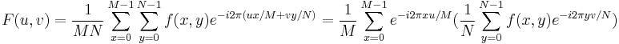

Aufgrund der Trennbarkeit der 2D-DFT kann ihre Definition wie folgt neu geschrieben werden:

Dies zeigt, dass eine 2D-FFT in eine Reihe von 1D-Fourier-Transformationen heruntergebrochen werden kann. Zum Berechnen einer 2D-FFT wird eine 1D-Fourier-Transformation auf jede einzelne Zeile der Eingabematrix angewendet und dann auf jede einzelne Spalte.
Origin verwendet die FFTW-Bibliothek für den Code der Fast-Fourier-Transformation.